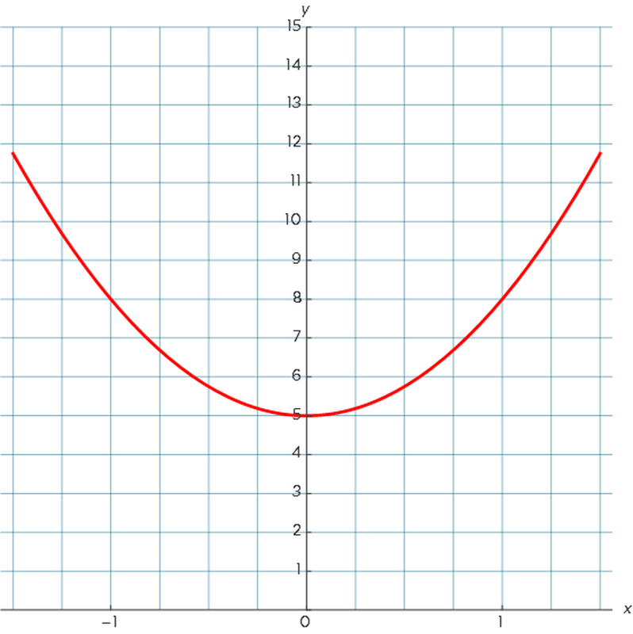

Functional Programming
"A journey begins"
Steven bedanken, Ik sta te popelen om met jullie functioneel
programmeren te bekijken.
Huge topic
Maak u klaar om een berg te beklimmen
Vragen in pm of in de slack community
Zelf ook nog aan het groeien & bijleren.
My Personal Journey 🙋♂️
Ik hoorde ongeveer een 4-5 jaar geleden iemand spreken van de term
"Functioneel programeren". Ik had al gehoord van Object oriented
in het school en wist wel al goed hoe dat werkte maar omdat die
persoon heel goed was in Javascript wou ik er toch wel meer over
weten, Ik leerde meer over basisconcepten zoals pure funcions en
first class functions en dacht, ik kan functioneel programmeren.
Man was ik verkeerd toen. Dit was ongeveer de periode dat
underscore js en coffeescript heel populair waren.
Er gingen een aantal jaren voorbij en Typescript werd populair en
ik kwam terug in aanraking met functioneel programeren, maar dit
keer op een heel ander niveau en er was een hele gap tussen mijn
kennis en de kennis van mijn team gennoten. Ik moest dingen
bergijpen zoals Options, Either, Monads, Tuples. etc. etc.
Ik begreep ze niet, iemand communiceerde met mij en ik begreep
niet wat die persoon mij wou vertellen. Die concepten zijn
belangrijk in functioneel programmeren en worden heel vaak
gebruikt om te communiceren.
We zullen vandaag beginen bij het begin van functioneel
programmeren. We hebben 30 minuten in 30min kan ik zeker en vast
niet het hele concept functioneel programmeren uitleggen.
Quick Check
Wie van jullie past functioneel programmeren dagelijks toe?
Wie van jullie kent de term wel maar wil toch heel graag weten
wat de diepere topics betekenen?
Wie van jullie wil code schrijven waarbij de toekomstige lezer
deze makkelijker kan begrijpen?
Series Agenda
Vertellen over de groote, waarschijnlijk overheen een paar FE
syncs. Zal gaan voor vroege en duidelijke aankondiging.
Definition & Why FP?
Functions
Closure
Composition
Immutability
Recursion
Lists & Data Structures
Async
Where to go after this?
Eerst en vooral gaan we kijken naar de definitie van fp en
vooral waarom zouden we het gebruiken? Waar zitten de wins?
We gaan het concept function bestuderen op een heel ander niveau
dan jullie waarschijnlijk gewoon zijn. Iedereen weet wat
functions zijn maar ik ben vrij zeker dat na deze talk je op een
heel andere manier naar functions zal kijken.
We gaan kijken naar closure en wat het betekend voor functioneel
programmeren. Ik zou durven zeggen dat het onmogelijk is om fp
te begrijpen zonder closure te begrijpen.
Dan gaan we kijken naar Composition. De manier waarop onze data
gemapt wordt en doorheen onze applicatie vloeit.
Dan gaan we kijken naar Immutability. Hoe gaan we de
veranderingen van values en state doorheen de tijd beheren?
Statechanges managen is 1 van de grootste concepten in
programmeren. Elk programma heeft op een wel bepaald punt in de
tijd een waarde of state.
Recursion is een pretty scary topic. :D te vergelijken met bv
reguliere expressies. Niemand houd van reguliere expressies.
Maar op zich ook iets om mee te nemen.
DAN! gaan we kijken naar map filter reduce en waar het
uiteindelijk in de fp puzzel past. Maar omdat we dan gaan
begrijpen waarom die stukken daar passen gaan we het veel beter
apprecieren.
Uiteindelijk gaan we landen bij Asynchrone code en hoe fp ons
daar kan helpen. Hoe gaan we functional principles toepassen
doorheen de tijd?
En dan gaan we kijken wat de volgende stappen kunnen zijn. Welk
libraries bestaan er voor ons? Wat met Typescript, etc, etc?
What is FP?
Functioneel programmeren is niet: het function keyword gebruiken
:D lol
Functioneel programmeren opent en beschrijft een andere manier
van denken (Problemen worden anders aangepakt)
Functioneel programeren is een concept, een samenhangend geheel
van modellen en theorien die het uiteindelijk vormen.
Ik heb mensen horen zeggen ik kan functioneel programeren: "ik
gebruik: Map, filter & reduce". Dat is maar een fractie van FP.
In computer science, functional programming is a programming
paradigm where programs are constructed by applying
and composing functions. It is a
declarative programming paradigm in which function
definitions are trees of expressions that map values to other
values, rather than a sequence of
imperative
statements which update the running state of the program.
Om deze definitie te begrijpen moet je al een aantal dingen weten
1: wat is een paradigma? en
2: wat is het verschil tussen Declaratief en imperatief?
Een paradigma is een samenhangend stelsel van modellen en
theorieën waarbinnen de werkelijkheid beschreven wordt. Met andere
woorden: het is de manier waarop wij de werkelijkheid ervaren. En
iedereen ervaart dit op zijn eigen manier.
Overgang naar waarom functioneel programeren.
Imperative vs Declarative
Dit is 1 van de belangrijkste redenen waarom je zou Functioneel
Programeren
Zoals de definitie zegt: Functioneel programmeren is meer
Declaratief dan imperatief.
Imperative
Imperative betekend dat de code vooral gefocussed is op de "Hoe
lossen we dit probleem op?" De toekomstige lezer van de code moet
Alle gerelateerde code lezen en ergens uitvoeren mentaal vooraleer
ze het doel van de code kunnen begrijpen. Ze moeten als het ware
afleiden van de code wat de code eigenlijk doet.
Je zou zeggenn "Op zich niet echt een relevant probleem". :D Wij
zijn programmeurs dat is wat we doen. Wel eigenlijk is het wel een
relevant probleem, want...
Het dwingt de lezer om iets te doen waar hij eigenlijk geen
natuurlijke gave voor heeft. Wie kan de code perfect uitvoeren? De
computer Wie is er niet zo goed in het uitvoeren van code? Onze
hersenen
Dus elke keer dat jij code schrijft dat de lezer dwingt om het uit
te voeren in zijn hoofd enkel en alleen om ze te begrijpen, is
code dat moeilijker te begrijpen zal zijn en dus ook code dat
moeilijker te onderhouden of te verbeteren is.
Declarative
Wat is declaratief dan? Decalratief staat recht tegenover
Imperatief en zegt neenee het belangrijke deel is de "Wat is de
uitkomst" en nog belangrijker de "Waarom doen we dit?".
Functioneel programmeren is op zichzelf meer declaratief
georienteerd. Maar op zich is ook alles relatief te bekijken.
Niets is echt absoluut hier en zegt ok functioneel programmeren is
declaratief en al de rest is imperatief, zo werkt het niet. Het is
gebasseerd op de perceptie van de lezer of de schrijver. ASEMBLY.
Hoe meer we de lezer van onze code zijn focus kunnen verschuiven:
weg van imperatieve, naar het declaratieve, hoe makkelijker het
zal zijn voor hem om de code te begrijpen. En dat geld niet enkel
wanneer iemand onze code leest. Dit geld ook voor onszelf in de
toekomst.
Provable
Nog een interessante reden waarom functioneel programmeren die
meer uit de hoek van de mathematici komt is het feit dat het
bewijsbaar is. Functioneel programmeren ook al
lijkt op een reeks functies die elkaar aanroepen, is het eigenlijk
pure wiskunde .
Ik ben vrij zeker dat er nu wel ergens een belletje gaat rinkelen
of dat er nu wel iemand is die terugdenkt aan de lessen wiskunde
van in het middelbaar. Waar we vergelijkingen moesten mathematisch
bewijzen. En waar er een manier werd gezocht om effectief aan te
tonen waarom 1 + 1 = 2 in de wiskunde. Geloof het of niet maar die
vergelijking is eigenlijk moeilijker te bewijzen dan je denkt.
Maar dat is niet het doel hier. Wij weten dat iemand ooit (1 of
andere wiskundige) dat bewijs voor ons heeft afgeleverd en daarom
is dat waar. Het kan niet in twijfel worden getrokken.
Dus uiteindelijk als ik u vertel dat functioneel programmeren
gebaseerd is op pure wiskunde (1+1) dan is dat het einde van het
verhaal. De wiskunde is bewezen en is correct.
Functioneel programmeren belooft ons wanneer we bepaalde
programeer principes toepassen dat het gebaseerd is op echte
wiskundige berekeningen. En ook al begrijp ik de wiskunde niet,
kan ik ervan uitgaan dat het bewezen is door iemand die slimmer is
dan ik.
En dat is uiteindelijk het soort code dat je wil in je programma.
Als ik die code gebruik dan weet ik wat ik kan verwachten en dan
weet ik dat ze elke keer werkt. 1 + 1 = 2
Nu kan ik mezelf focussen op belangrijkere code in mijn
applicatie, business logica en domein locgica .
Dit is de code waar ik mijn tijd aan wil spenderen.
less to read
Wat is de beste code? De beste code is code die niet bestaad :D of
die niet moet gelezen worden. Beetje een vreemde uitspraak maar
laat het mij even uitleggen.
Stel er is een codebase die 10.000 lijnen groot is. Wat als er van
die code 9.900 regels gebaseerd zijn op mathematische principes
waar ik niet moet aan twjifelen en maar 100 regels business logic
code waar ik mijn hele dag aan toewijd.
Zou deze codebase makkelijker onderhoudbaar zijn? Zou ik sneller
stukken vinden en zou ik makkelijker bugs oplossen? Als ik de
oppervlakte verklein van hetgeen waar ik me op zou moeten
focussen?
Functions
Dus functions, spreken we enkel over het function keyword? Of
spreken we over een dieper concept? Wat is de definitie van een
functie? Vandaag gaan we de definitie van een functie telkens
verfijnen.
Laat ons even een voorbeeld nemen
What is a function?
function addNumbers (x = 0, y = 0, z = 0, w = 0) {
var total = x + y + z + w;
console.log(total);
}
function extraNumbers (x = 2, ...args) {
return addNumbers(x, 40, ...args);
}
extraNumbers(); // 42
extraNumbers(3, 8, 11); // 62
[SPACE] Hier zien we een functie addNumbers, we
krijgen xyz en w binnen in de functie we gaan deze optellen en dan
gaan we het totaal naar de console printen.
[SPACE] Daarnaast hebben we extraNumbers die
addNumbers blijkbaar aanroept en die voegt dan wat extra waarden
toe.
De meest krieteke vraag hier is, zijn dit een functies?
Laat ons even kijken naar addNumbers: we krijgen wel input values
binnen. en we doen er wel degelijk iets mee, we maken een totaal
en we printen alles uit. Deze functie doet wel degelijk iets. Maar
is dat genoeg? Niet echt. De lat ligt horen om een functie te
zijn.
Maar wat zijn deze functies dan? De beste term dat je kan
gebruiken om deze twee functies te beschrijven is procedure.
Een procedure is een collectie van opperaties. We gebruiken
allemaal procedures want we moeten allemaal dingen doen in onze
programmas. Dus het functie keyword gebruiken is niet genoeg om
een functie te maken wel genoeg om een procedure te maken.
Procedures kunnen perfect dingen doen en dingen terugkeren en er
zijn veel voordelen aan procedures. Maar wat is nu het verschil
tussen een procedure en een function.
We zullen onze definitie beginnen bij het feit
dat een functie niet enkel een input moet hebben maar ook een
output. Niet enkel printen naar de console, een echte return
value. Dat is het eerste deel van de puzzel.
is extraNumbers een pure functie? Het neemt inputs en returnt een
output. De meesten hier weten dat een functie automatisch in js
undefined weergeeft. Dus uiteindelijk geeft addNumbers wel
undefined terug.
Wel, de definitie breid zich uit naar het feit dat functies enkel
andere functies kunnen aanroepen. Dus omdat addNumbers een
procedure is is extraNumbers dat automatisch ook.
Functions vs Procedures
function tuple (x, y) {
return [x + 1, y - 1];
}
var [a, b] = tuple(...[5, 10]);
console.log(a); // 6
console.log(b); // 9
Wat kunnen we hier zeggen? Tupple is een eigenlijk gewoon een
array van elementen die aan elkaar gelinkt zijn, vooral gebruikt
in datastructuren en talen zoals python, elm en erlang. Js heeft
geen syntactic sugar voor tupples.
[SPACE] Hier op lijn 5 maken we de lezer van de
code wel duidelijk dat hetgeen wat uit de array komt belangrijker
is dan de array zelf. De array op zich is onbelangrijk. Merk hier
ook vooral op dat we uiteindelijk achterblijven met 2 outputs ipv
1.
Dus de definitie breid uit en zegt: een funcie kan meerder inputs
hebben maar eigenlijk ook meerder outputs.
[SPACE] Maar er is nog meer , wat
als we op lijn 2 gewoon return 40 zouden zetten. We geven inputs
en we krijgen een output. Wel dat is op zich dan ook weer geen
"echte" functie meer. En om de echte geest van een functie te
begrijpen moeten we toch terugkeren naar de pure wiskunde
f(x) = 2x3 + 3
En als we terugkeren naar pure wiskunde dan keren we terug naar
wat wij kende in het middelbaar als formules. Een formule of een
vergelijking. En ik weet nog goed bij mij betekende dat niet veel
tot als we die grafische rekenmachines erbij pakte. Want
uiteindelijk waren het allemaal random nummers die we terugkregen
in het begin. 1 gaf een 5 en 2 gaf 11. En uiteindelijk als we al
die waarden gingen verbinden met elkaar dan kregen we onze
tekening.

function f(x) {
return 2 * Math.pow(x, 2) + 3;
}
Anders gezegd, dus als we een x coordinaat ingeven krijgen we een
output y coordinaat. En wanneer we de input en de output samen
voegen, dan kunnen we hun betekenis interpreteren als een
parabool.
Dus! Wat is een functie?
function shippingRate (size, weight, speed) {
return ((size + 1) * weight) + speed;
}
Hier als we een functie maken shippingRate, dan verteld de naam
van de functie mij iets over de relatie tussen de input waarden en
de output. Als ik size, weight en speed ingeef krijg ik een
shippingRate terug. Daarvoor dient het.
We hebben veel "functies" in onze apps, aka procedures.Sommige
duizenden.
Bij hoeveel functies in onze apps kunnen we zien wat de relatie is
tussen input en output?
Hoeveel functies hebben uberhaupt outputs? Waarschijnlijk niet
veel.
😎
Dus aan ons om een soort bril op te zetten en te zien in onze apps
waar de "echte" functies zitten en hoe we ze kunnen isoleren.
Side effects
Ben zeker dat velen de term...side effects al gehoord hebben of
kennen.
Dus in functioneel programeren willen we functies zonder side
effects. Maar wat betekend dat?
function shippingRate () {
rate = ((size + 1) * weight) + speed;
}
var rate;
var size = 12; var weight = 4; var speed = 5;
shippingRate();
rate; // 57
size = 8; speed = 6;
shippingRate();
rate; // 42
Als we naar dit programma kijken dan zijn er een aantal dingen die
je kan opmerken. 1. shippingRate heeft geen parrameters 2.
shippingRate heeft geen return keyword
Maar we zien wel dat de functie iets doet met wat waarden. en
effectief een berekening maakt die een rate berekend.
[SPACE] Op lijn 5 en 6 zetten we de inputs wel
op, we roepen shippingRate aan op lijn 7 en op lijn 8 hebben we
een legitte shippingRate. Deze code werkt perfect.
Deze code is eigenlijk zoals veel van onze code in onze apps. We
gebruiken stuff buiten de functie en we beinvloeden andere dingen
ergens anders en uitendelijk vervolledigen we ons einddoel om een
shippingRate te berekenen. Wat perfect ok is, het is alleen niet
functioneel.
De definitie breid nogmaals uit. In theorie
hebben we hier inputs en outputs en is er een relatie die
beschreven wordt als een functie. Maar de outputs en inputs zijn
indirect.
ALS de inputs of de outputs indirect zijn, spreken we niet over
een echte functie.
Dus uitendelijk als we side effects bedoelen, bedoelen we
indirecte input of indirecte outputs of beiden.
Dit zijn side effect, en we willen ze zo veel mogelijk vermeiden.
We krijgen de voordelen niet van pure functies als we side effects
hebben. We krijgen niet de provability & de security waarbij we
weten dat dit ding 100% werkt.
Niet alleen jij maar ook de lezer krijgt de voordelen niet.
function shippingRate (size, weight, speed) {
return ((size + 1) * weight) + speed;
}
var rate;
rate = shippingRate(12, 4, 5) // 57
rate = shippingRate(8, 4, 6) // 42
Dit is een voorbeeld van directe input en die sematisch gerelateed
is aan directe output
Hier is wel iets zeer interessant op te merken hier: Om de
definitie van een functie te hebben. Heb je een
function invocatie
nodig. De definitie van de functie is op zich minder belanrijk dan
de functie invocatie. Het belangrijke deel hier is de functie
invocatie.
Side effects
Variables outside of the function
I / 0 (console, files, etc.)
db storage
Network Calls
DOM
Timestamps, Random Numbers
...
Wat zijn nu side effects? En hoe kunnen we ze identificeren? We
zagen er 1 maar er zijn er zeker meer.
ALLES OVERLOPEN
Op zich zeggen we in functioneel programmeren avoid side effects.
Maar wat daar eigenlijk gezegd wordt is minimize side effects.
Elk programma heeft side effects. Dus side effects zijn niet
noodzakelijk slecht. Wat ze wel doen zijn de voordelen van
functioneel programeren wegnemen.
Wat willen we doen met side effects. We willen ze heel
intentioneel vermeiden of uitvergroten in onze applicaties want
daar zitten de bugs. Daar zitten de meeste problemen.
Pure Functions
Dus wat is een pure functie? Een pure functie is een functie die
al zijn inputs direct ontvangt en al zijn outputs direct doorgeeft
en de functie heeft geen side effect. Maar onthoud hier dat het
meer over de call gaat dan over de definitie. Dus we willen gaan
voor pure function calls.
// pure
function addTwo (x, y) {
return x + y;
}
// impure
function addAnother (x, y) {
return addTwo(x, y) + z;
}
Dus addTwo is pure, maar addAnother hier gebruikt z als een
indirecte input, dus theoretisch gezien is deze functie impure.
Daar willen we in onze programmas naar kijken, waar zitten de
indirecte inputs in onze functies en invalideren ze of de functie
zich puur zal gedragen of niet. Op zich is het in praktijk
ingewikkelder. De code kan er als volgt uitzien
const z = 1
function addTwo (x, y) {
return x + y;
}
function addAnother (x, y) {
return addTwo(x, y) + z;
}
addAnother(20, 21); // 42
De code kan een variable hebben in de outer scope of vanuit een
import statement. In dit geval is het de z variable.
[SPACE] Wat als er nu stond ipv + z, + 1 op lijn
8
Iedereen zou zeggen, geen probleem. Dat is een pure functie
Is de variabele z hier echt een invalidatie van de pure functie of
is z gewoon een semantische placeholder die 1 bevat?
[SPACE] addAnother veroorzaakt geen side effects,
en gebruikt geen side effects buiten die z constante. En dat is
uiteindelijk ook beschouwd als pure. Lijn 11 is nog steeds een
pure function call.
[SPACE] En misschien denken we hier van ok dat
klopt omdat we op lijn 1 const gebruiken
var z = 1
function addTwo (x, y) {
return x + y;
}
function addAnother (x, y) {
return addTwo(x, y) + z;
}
addAnother(20, 21); // 42
Wat als we het var keyword gevruiken? Is het nu nog pure?
Is de keuze tussen var en const hier wat de leesbaarhed bepaald
van het programma? Ik zou zeggen nee. En ik ga ook de reden zegen
waarom niet en dit is belangrijk voor de rest van onze talk hier.
Wat als ik u een vraag stel over een programma? Maar ik liet u
maar een deel zien van het programma? Wat kun je dan antwoorden?
Je zou eender wat kunnen zeggen. Dus het is niet echt nuttig om
een programma te bespreken tenzij we het in zijn geheel kunnen
zien en bespreken.
Dus vanaf nu assumeren we dat we heel het programma telkens zien.
En daaruit volgt dan de vraag: wordt in dit programma z opnieuw
toegekend aan een andere waarde? Nee. Dus deze var gedraagt zich
in dit programma eigenlijk als een const.
De belangrijkste vraag is dus: wordt de variabele gereassigned? en
niet: kan de variabele gereassigned worden. EN! Nog belangrijker,
is het vanzelfsprekend voor de lezer of deze varabele gereassigned
wordt ja of neen?
addAnother gedraagt zich pure omdat z niet gereassigned wordt.
Maar wacht: op lijn 8 hebben we NOG! een variabele die reassigned
kan worden. addTwo is een functie die op lijn 3 gemaakt wordt maar
deze kan makkelijk op lijn 6 gereassigned worden. Maar in dit
programma kunnen we zien dat addTwo niet wordt gereassigned, dus
het gedrach is nog steeds pure.
Wat dus belangrijk is voor de auteur van de code. Is om duidelijk
te maken dat de gebruikte functie addTwo (in dit geval) gebruikt
zal worden als een const en dat deze niet kan gereassigned worden.
Dat is het doel.
[SPACE] MAAR WAAROM? We willen de lezer van de
code minder zorgen geven. In dit programma moet de lezer effectief
gaan kijken op lijn 3, 4 en 5 wat addTwo doet en moet die gaan
kijen eigenlijk over heel het programma of er geen reassignment
gebeurd van varable z. Ze moeten het hele programma mentaal
uitvoeren. Van lijn 1 tot lijn 11 om het te begrijpen.
Als ik zie als lezer in de code dat addAnother volledig pure is en
ik moet nergens anders gaan kijken. Dan kan ik lijn 11 veilig in
[SPACE] isolatie uitvoeren mentaal om het
programma te begrijpen.
Reducing surface area
function addAnother (z) {
return function addTwo(x, y) {
return x + y + z;
}
}
addAnother(1)(20, 21); // 42
Dit is een heel ander voorbeeld als daarnet. Sommigen herkenen
meteen het patroon. Je hebt waarschijnlijk al gezien dat functies
als waardes kunnen worden terug gegeven.
[SPACE] Dus we hebben een functie addAnother die
en z parameter aanvaard. Het is geen const in de global scope, het
is een parameter die in gegeven wordt als eerste.
[SPACE] Op lijn 2 returnen we dan een functie die
uiteindelijk op lijn [SPACE] 3 ook z gebruikt.
[SPACE] Dus op lijn 7 krijgen we een dubbele
function invocatie.
Wat interessant is in deze code is dat deze code tegenover het
vorige voorbeeld. Een kleiner oppervlak heeft waar wij ons zorgen
hoeven te maken dat z opnieuw kan gereassigned worden. Als wij
willen controleren is z effectief een const. dan zijn er maar 2
lijnen waar we rekening moeten mee houden. lijn 1,5 en lijn 2,5
Het zijn de enige 2 lijnen in het hele programma dat z opnieuw
kunnen reassignen
Als een gevolg van dat kleiner oppervlak kunnen we zeggen dat we
de leesbaarheid verhogen. We verhogen de zelfzekerheid voor de
lezer van onze code, wanneer hij z als 1 ingeeft dan is hij
zekerder dat dat 1 blijft
Same input, same output
function getId(obj) {
return obj.id;
}
Wat kunnen we zeggen over deze functie?
Eerst even laten inzinken
Wat Als ik getId telkens opnieuw zou aanroepen met hetzelfde
object. Zal ik dan dezelfde waarde krijgen? Hoe zeker kan je deze
functie voorspellen?
De belangrijke vraag om hier te stellen is: Wordt dit object
ergens op een bepaald punt gemuteerd? Stel dat het antwoord nee
is. Dat je alle plaatsen kan zien waar getId wordt aangeroepen.
Zou je dan zeker zijn dat deze functie pure is?
Same input, same output
function getId(obj) {
return obj.id;
}
getId({
get id() {
return Math.random();
}
})
Wat als ik meer van het programma toon, wat als dat object een
getter heeft ipv een property en wat als die getter random nummers
genereert?
Ineens is ons level of confidence wel helemaal weg nu.
Het is belangrijk om het hele programma te zien of beter! Alle
relevante delen van het programma.
Pure functie invocaties werken in isolatie. Anders gezegd: wanneer
we telkens dezelfde input geven, gaan we dezelfde output krijgen.
Nog een kleine component van onze definitie van een pure functie.
Elke keer we een pure functie aanroepen met dezelfde input, dan
krijgen we telkens dezelfde output.
How to make it pure?
Wat zijn de opties als we een inpure functie hebben? Wat kunnen we
doen? 1 optie is om het inpure te laten, we hebben nu eenmaal side
effects. Ze moeten gebeuren en zo is dat.
We kunnen er zeker expliciet over zijn. We kunnen het procedure
zodanig noemen zodat het duidelijk is dat het naar de database
gaan schrijven of een api call gaan uitvoeren.
Een commentje? Thar be dragons...side effects beware, of een
sideEffects.js file?
De reden waarom we expliciet willen zijn is omdat we het zo
makkeiljker maken om de code te onderhouden.
Extracting impurity
function newComment(userId, comment) {
var record = {
id: generateUID(),
user: userId,
text: comment
};
var elem = commentElement(record);
commentsList.appendChild(elem);
}
newComment(42, "This is my comment!");
Kunnen we een stuk herschikken zodanig dat een deel van de functie
pure wordt en een ander deel de side effects heeft?
We brengen het side effect naar de buitenlaag en we houden de pure
functionaliteit in de core van de app
[SPACE] Lijn 12 is een inpure function call omdat
we op [SPACE] lijn 8 en 9 een side effect hebben.
[SPACE] Misschien heb je ook op lijn 3 een anders
side effect gezien?
[SPACE] Wat als we van deze code zoiets kunnen
maken?
Extracting impurity
function newComment(userId, commentId, comment) {
var record = {
id: commentId,
userId,
text: comment
};
return buildCommentElement(record);
}
var commentId = generateUID();
var elem = newComment(
42,
commentId,
"This is my comment!"
);
commentsList.appendChild(elem);
[SPACE] We hebben hier geen procedure newComment
maar een functie newComment. De enige job van die functie is om
een nieuwe comment te maken.
[SPACE] De side effects in dit programma zitten
op lijn 10 en lijn 16
De side effets bestaan nog, maar zitten in de buitenschil van het
programma.
Containing impurity
var someAPI = {
threshold: 13,
isBelowThreshold: function(x) {
return x <= SomeAPI.threshold;
}
}
var numbers = [];
function insertSortedDesc(v) {
SomeAPI.threshold = v;
var idx = numbers.findIndex(SomeAPI.isBelowThreshold);
if (idx == -1) {
idx = numbers.length;
}
numbers.splice(idx, 0, v);
}
insertSortedDesc(3);
insertSortedDesc(5);
insertSortedDesc(1);
insertSortedDesc(4);
insertSortedDesc(2);
numbers; // [5, 4, 3, 2, 1]
Als we de impurity niet kunnen extracten, dan hebben we nog een
manier om een functie pure te maken. Dat is door ze te containen
met een andere functie.
Wat bedoelen we hier exact mee? Containen. En wat zijn de
voordelen. Wat als we een side effect kunnen isoleren in een
functie die maar 5 lijnen groot code is ipv dat we een side effect
hebben in de hele global scope. Dat is wat we bedoelen met
containing the impurity
Als we naar deze code kijken dan zien we een someAPI object met
wat properties en een methode isBelowThreshold. Wat belangrijk is
daar op lijn 11 is dat we die methode gebruiken daar op lijn 11.
[SPACE] SOme api kan een framework of een node
module zijn in dit voorbeeld.
[SPACE] Wat doe ik als ik de numbers array niet
will vervuilen in de global scopen en ik wil die SomeAPI niet
gebruiken? Laten we de functie insertSortedDesc wrappen met een
andere functie.
Containing impurity
var someAPI = {
threshold: 13,
isBelowThreshold: function(x) {
return x <= SomeAPI.threshold;
}
}
var numbers = [];
function getSortedNums(nums, v) {
var numbers = num.slice();
insertSortedDesc(v);
return numbers;
function insertSortedDesc(v) {
SomeAPI.threshold = v;
var idx = numbers.findIndex(SomeAPI.isBelowThreshold);
if (idx == -1) {
idx = numbers.length;
}
numbers.splice(idx, 0, v);
}
}
numbers = insertSortedDesc(numbers, 3);
numbers = insertSortedDesc(numbers, 5);
numbers = insertSortedDesc(numbers, 1);
numbers = insertSortedDesc(numbers, 4);
numbers = insertSortedDesc(numbers, 2);
numbers; // [5, 4, 3, 2, 1]
Hier hebben we een functie getSortedNums rond de functie
insertSortedDesc gezet. Merk op hier dat we nog steeds de globale
var numbers hebben op lijn 7.[SPACE] Maar merk
ook op dat er nieuwe array is op lijn 10. Wanneer lijn 21 nu de
array aanpast gaat die de array op lijn 10 aanpassen en niet die
op lijn 7.
[SPACE] Op lijnen 25 tot 29 geven we de global
scope numbers array door aan de functie getSortedNums en daar
maken we een copy op lijn 10 waar we de bewerking op doen.
Wat hebben we hier nu exact gedaan. We hebben hier het side effect
van de array aan te passen gereduceerd tot de lijnen
[SPACE] ipv de globale scope van heel het
programma
We zitten wel nog steeds met impurity hier op
[SPACE] lijn 15 en dan op lijn 16. Op zich kunnen
we hier niet gaan wrappen want het komt uit een framework. Is er
een andere manier dat we deze impure lijn eruit kriigen? Er is nog
een techniek maar het is wel lelijker dan dit. Maar het is beter
dan niets. Ipv de functie te wrappen kunnen we kijken naar een
volgende techniek en dat is een adapter functie naast onze functie
zetten.
Adaptor function
var someAPI = {
threshold: 13,
isBelowThreshold: function(x) {
return x <= SomeAPI.threshold;
}
}
var numbers = [];
function insertSortedDesc(v) {
SomeAPI.threshold = v;
var idx = numbers.findIndex(SomeAPI.isBelowThreshold);
if (idx == -1) {
idx = numbers.length;
}
numbers.splice(idx, 0, v);
}
function getSortedNums(nums, v) {
var [origNumbers, origThreshold] = [numbers, SomeAPI.threshold]
numbers = nums.slice();
insertSortedDesc(v);
nums = numbers;
[numbers, SomeAPI.threshold] = [origNumbers, origThreshold];
return nums;
}
numbers = insertSortedDesc(numbers, 3);
numbers = insertSortedDesc(numbers, 5);
numbers = insertSortedDesc(numbers, 1);
numbers = insertSortedDesc(numbers, 4);
numbers = insertSortedDesc(numbers, 2);
numbers; // [5, 4, 3, 2, 1]
Merk op dat we nu terug dichter staan tegen het eerste voorbeeld,
we hebben een insertSortedDescription en ipv een functie errond
hebben we nu een adapter functie die naast defunctie staat.
[SPACE]
[SPACE] Wat het belangrijkste is hier is dat we op
lijn 20 eerst een copy maken van de huidige state die gaat worden
aangepast.
[SPACE] Daarna op lijn 21 gaan we de omgeving
opzetten door de aangegeven array te copieren.
[SPACE] Daarna op lijn 22 roepen we ons side
effects aan insertSortedDesc.
[SPACE] Op lijn 23 vangen we de verandering op in
de aangegeven nums parameter.
[SPACE] En dan het belangrijkste stuk van de code
op lijn 24 zetten we de state terug naar wat die initiel was. en
op lijn 25 geven we nums terug
[SPACE] Dit is heel bruut, het is op zich geen
prachtige code en het zal snel complexer worden als we bv dingen
in de dom gaan beginnen bijcoderen.
Het belangrijkste wat we hier uiteindelijk gedaan hebben is dat nu
lijn 28 nu wel uitgevoerd wordt kan worden als een pure function.
Alle condities kunnen wordden afgevinkt. Het neemt directe inputs
en geeft directe outputs, er zijn geen state changes achteraf
gezien. En we hebben niet gerust op de state voor de functie
invokatie
Last resort : at least make it obvious
Als we niet kunnen extracten, als we niet kunnen containen en als
we geen adapter functie kunnen schrijven. Dan blijven we zitten
met ons side effect. Maar maak het op dat moment dat op zijn minst
extreem duidelijk dat daar problemen zitten.
Voor mensen die hunzelf is willen testen. Heb ik 2 oefeningskes op
deze repo gezet.
Oefeningen kort uitleggen
We zullen deze oefening kort efkes herevalueren volgende keer
Thank you 🙏
Volgende keer gaan we verder met adapters en gaan we dieper graven
in het functioneel landschap. Vandaag hebben we enkel het puntje
van de ijsberg gezien.
Tot dan! Zal de agenda op tijd aanvullen.